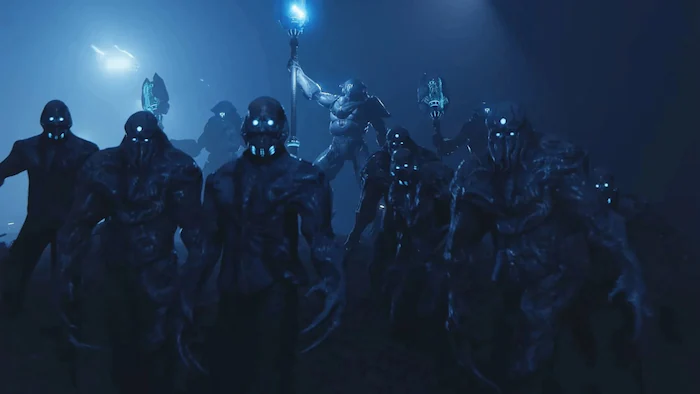
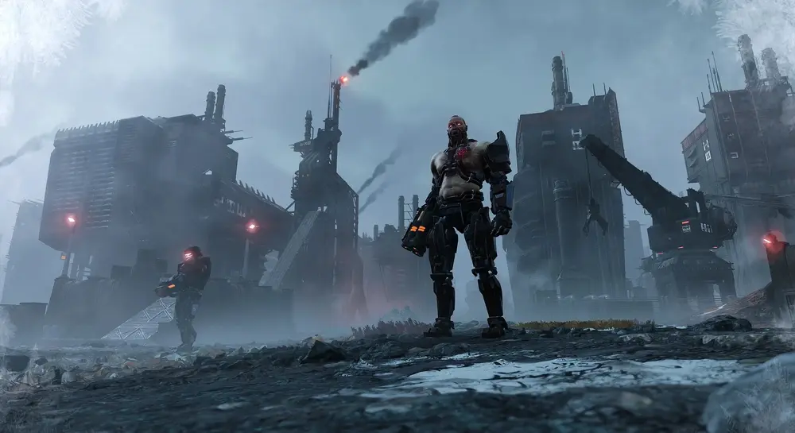

Conoce tu enemigo
Expande cada sección para ver detalles y espacio para imagen.
Terminidos
Los Terminids, también conocidos como la Horda Terminida o simplemente los Bichos, son una plaga alienígena repugnante de insectoides gigantes que solo viven para reproducirse, devorar y destruir todo rastro de Democracia Gestionada. Estos monstruos con exoesqueleto, garras afiladas y bile ácido no piensan, no sienten, no votan. Su único instinto es expandirse como una infección imparable. ¡Empezaron siendo "criados" por Super Earth para extraer E-710 (el combustible del futuro), pero los muy traidores se rebelaron y ahora infestan planetas enteros con sus nidos y esporas! Desde pequeños Scavengers hasta Chargers gigantes que embisten como trenes de carga, o Bile Spewers que vomitan ácido a distancia… todos forman una marea imparable de mandíbulas y muerte.

Iluminados
Los Illuminate, conocidos como Squ'ith o simplemente los Calamares, son una raza alienígena antigua, xenófoba y tecnológicamente superior que existía miles de años antes que la humanidad. Estos seres parecidos a cefalópodos con poderes mentales y tecnología mística buscan recuperar su antiguo dominio galáctico… ¡a costa de nuestra libertad! Usan escudos de energía, teletransportación, sondas espía y hordas de Voteless (colonos capturados y convertidos en esclavos sin mente). Sus Overseers dirigen desde las sombras, controlando mentes y desplegando tecnología que roza lo "mágico". No vienen a conquistar… vienen a esclavizar y a borrar toda idea de democracia. Son pocos en número, pero extremadamente peligrosos y longevos. ¡No subestimes su inteligencia!

Automaton
Los Automatons, autodenominados Colectivo de Cyberstan, son una legión de robots sin alma, programados exclusivamente para el asesinato y la violencia socialista. Fríos, calculadores y con un odio irracional hacia la libertad, estos "bots" son herederos de los antiguos Cyborgs que una vez se atrevieron a rebelarse contra Super Earth. Armados con láseres, cohetes, sierras y escudos, marchan en formaciones perfectas mientras emiten cánticos binarios de propaganda comunista. No sienten dolor… pero sí un profundo desprecio por todo lo que representa Managed Democracy. Desde Devastators que disparan a distancia hasta Hulks blindados y fábricas que escupen más máquinas de guerra, su objetivo es claro: esclavizar a la humanidad bajo su "colectivo".
